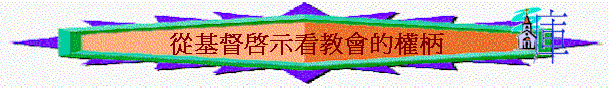

|
教會的權柄 |
教會的建立 |
教會的奧秘 |
教會的守望 |
「教會即是代表教會的帶領，是高層們的........」
「教會不是一個教會嗎，為何分那麼宗派？」
「教會有權柄這樣對肢體嗎？是否不近人情？」
「如何使教會得復興及得增長？」
「教會與以色列國度有甚麼分別？」
「教會的制度如何？是牧師制？是長老制？」
「我應如何為教會守望？」
導論----教會的定義
1.從字義來看
A.聚會
「第一，我聽說，你們聚會的時候彼此分門別類，我也稍微的信這話。」林前11:18
「若沒有人繙，就當在會中閉口，只對自己和神說就是了。」林前14:28
〜教會的希臘文是“ekklesia”有聚會、會議的意思
〜而英文“church”在和合本中文的翻譯有時是「會中」「聚會」字眼
〜原來信徒聚合一齊有聚會已是教會了！
B.呼召出來之民
「聖靈立你們作全群的監督，你們就當為自己謹慎，也為全群謹慎，牧養神的教會，就是他用自己血所買來的（或作：救贖的）。」徒20:28
〜而“ekklesia”這個字由兩部份組成：
ek—out
出來
klesia—call
呼召
〜而教會就是主用祂的血買來(或作救贖的)的人，他們是主呼召出來的，是屬神的子民
〜所以教會可以泛指一班被主呼召出來的信徒
2.從地域來看
「你所看見的當寫在書上，達與以弗所、士每拿、別迦摩、推雅推喇、撒狄、非拉鐵非、老底嘉、那七個教會。」啟1:11
「聖靈向眾教會所說的話，凡有耳的，就應當聽！」啟2:29
〜在廣義來說，教會是一班被召出來的屬神的群體，大家同是主內一個身體，但神也容許因地域的緣故，有不同眾教會的出現，而各地區的教會也有她獨的文化，她獨特的人組成。
A.地區性的教會
「那時，猶太加利利、撒瑪利亞各處的教會都得平安，被建立；凡事敬畏主，蒙聖靈的安慰，人數就增多了。」徒9:31
「論到為聖徒捐錢，我從前怎樣吩咐加拉太的眾教會，你們也當怎樣行。」林前16:1
「保羅、西拉、提摩太寫信給帖撒羅尼迦在父神和主耶穌基督裡的教會。願恩惠平安歸與你們！」帖前1:1
〜在某一地區中，可能也有不少城巿及地區，所以有加拉太的眾教會，馬其頓的眾教會。
B.在家�堛滷郱|
「又問在他們家中的教會安。問我所親愛的以拜尼土安；他在亞西亞是歸基督初結的果子。」羅16:5
「亞西亞的眾教會問你們安。亞居拉和百基拉並在他們家裡的教會，因主多多的問你們安。」林前16:19
「和妹子亞腓亞並與我們同當兵的亞基布，以及在你家的教會。」門1:2
3.從民族來看
「從這日起，耶路撒冷的教會大遭逼迫，除了使徒以外，門徒都分散在猶太和撒瑪利亞各處。」徒8:1
「也為我的命將自己的頸項置之度外。不但我感謝他們，就是外邦的眾教會也感謝他們。」羅16:4
〜耶路撒冷代表猶太人的教會，而也有外邦的眾教會
4.從字眼來看
「倘若我耽延日久，你也可以知道在神的家中當怎樣行。這家就是永生神的教會，真理的柱石和根基。」提前3:15
A.神的家
「這樣，你們不再作外人和客旅，是與聖徒同國，是神家裡的人了；」弗2:19
a.代表有家人
b.代表有溫暖
c.代表神住在中間
B.永生神的教會
「我原是使徒中最小的，不配稱為使徒，因為我從前逼迫神的教會。」林前15:9
「奉神旨意作基督耶穌使徒的保羅和兄弟提摩太，寫信給在哥林多神的教會，並亞該亞遍處的眾聖徒。」林後1:1
a.代表屬於神
b.代表在�堶惘野穫〞滲哄A有賜人永生的神
c.無論教會如哥林多教會般軟弱，仍是神的教會
C.真理的柱石和根基
a.代表能承托教會的是真理
b.代表教會有責任堅守真理，不令真理的柱石受破壞
D.主的聖殿
「這樣，你們不再作外人和客旅，是與聖徒同國，是神家裡的人了；並且被建造在使徒和先知的根基上，有基督耶穌自己為房角石，各（或作：全）房靠他聯絡得合式，漸漸成為主的聖殿。]你們也靠他同被建造，成為神藉著聖靈居住的所在。」弗2:19-22
a.代表主居住的地方
b.代表信徒可事奉之處
c.代表聖潔的神
E.基督的身體
「又將萬有服在他的腳下，使他為教會作萬有之首。」弗1:22
a.代表教會是基督的一部份
b.代表教會的頭是基督
c.代表教會是可以成長如身體可以成長一樣
F.金燈臺
「論到你所看見、在我右手中的七星和七個金燈臺的奧秘，
那七星就是七個教會的使者，七燈臺就是七個教會。」」啟1:20
a.燈臺的目的----照亮聖所----神得榮耀
「要做燈臺的七個燈盞。祭司要點這燈，使燈光對照。」25:37
「神能照著運行在我們心裡的大力充充足足的成就一切，超過我們所求所想的。但願他在教會中，並在基督耶穌裡，得著榮耀，直到世世代代，永永遠遠。阿們！」弗3:20-21
b.燈臺的藍圖----照神樣式----謹守真理
「做燈臺和這一切的器具要用精金一他連得。要謹慎做這些物件，都要照著在山上指示你的樣式。」25:39-40
c.燈臺的材料----一他連得----強調合一
「要用精金做一個燈臺。燈臺的座和幹與杯、球、花，都要接連一塊錘出來。」25:31
「球和枝子要接連一塊，都是一塊精金錘出來的。」25:36
「做燈臺和這一切的器具要用精金一他連得。」25:39
G.蒙揀選的太太
「作長老的寫信給親愛的該猶，就是我誠心所愛的。」約:1
a.代表基督與教會的親密關係
b.代表有兒女
c.代表揀選
d.代表有愛
一.從基督啟示看教會的權柄
「我還告訴你，你是彼得，我要把我的教會建造在這磐石上；陰間的權柄（權柄：原文作門），不能勝過他。我要把天國的鑰匙給你，凡你在地上所捆綁的，在天上也要捆綁；凡你在地上所釋放的，在天上也要釋放。」」太16:18-19
〜聖經第一次直接題及教會就是此段經文了，是耶穌第一次啟示教會的真理
1.教會與基督
「我的教會……」
A.教會是屬於基督的
B.教會是與基督有關
C.教會是基督重視的
「聖靈立你們作全群的監督，你們就當為自己謹慎，也為全群謹慎，牧養神的教會，就是他用自己血所買來的（或作：救贖的）。」徒20:28
∼「我的教會」,主耶穌一直是十分謙卑，不與神為同等，時常題及這是「父的……」但講及教會，祂卻十分重視，說教會是祂的，是祂的教會，是用重價買回來的。
2.教會與權柄
〜基督是十分重視教會的，祂也賜下權柄給教會及聖徒
A.信徒可參與建造的權柄
「我還告訴你，你是彼得，我要把我的教會建造在這磐石上．．．」太16:18
「並且被建造在使徒和先知的根基上，有基督耶穌自己為房角石，」弗2:20
「你們來到主面前，也就像活石，被建造成為靈宮，作聖潔的祭司，藉著耶穌基督奉獻神所悅納的靈祭。」彼前2:5
〜「彼得」的意思就是「盤石」，主既然這麼重視教會，祂可以差天使管理教會，但祂卻用人，用三次不認主的彼得，將教會建立在使徒上，其它經卷更講及我們是活石，被建造起來，主將建立教會的權柄交與信徒，我們有權柄有責任一同建立這家，當然真正的房角石及根基仍是基督，但我們可以成為活石，在上面繼續建立教會。
B.勝過陰間的權柄
「陰間的權柄不能勝過他．．．」
〜英文譯為“
The gates of hell shall not prevail against it ”，直譯陰間/地獄的門不能勝過它
〜陰間可指:
a.死亡/墳墓
「死啊！你得勝的權勢在那裡？死啊！你的毒鉤在那裡？死的毒鉤就是罪，罪的權勢就是律法。感謝神，使我們藉著我們的主耶穌基督得勝。」林前15:55-57
〜被召的人(教會)已可勝過死亡的能力，因已得著復活的生命！
b.地獄
〜但凡成為教會的肢體，已可勝過地獄的痛苦，因為已免受刑罰，已出黑暗入光明了！
C.引入進天國的權柄
「我要把天國的鑰匙給你．．．」
〜鑰匙的作用是為了開門，教會有權柄開啟天國(
the kingdom of heaven )，引領人進入天國的寶庫中，得著天國的福氣。
D.靈界的權柄
「凡你在地上所捆綁，在天上也要捆綁……」
「我實在告訴你們，凡你們在地上所捆綁的，在天上也要捆綁；凡你們在地上所釋放的，在天上也要釋放。」太18:18
「彼得說：「你們為什麼同心試探主的靈呢？埋葬你丈夫之人的腳已到門口，他們也要把你抬出去。」
婦人立刻仆倒在彼得腳前，斷了氣。那些少年人進來，見他已經死了，就抬出去，埋在他丈夫旁邊。」徒5:9-10
〜天上是屬天，有天使有神的工作，教會有權柄捆綁/管教地上的人(正如使徒行傳亞拿尼亞夫婦欺哄聖靈被管教事件)，在地上所管教的，天上也會效力的。
∼事實上教會影響靈界及天上的事，天使會為救恩的人效力，而聖經也說，只要奉主名有2至3個人為犯罪的肢體祈禱，在天上會捆綁，可令他回轉。
E.管教的權柄
「倘若你的弟兄得罪你，你就去，趁著只有他和你在一處的時候，指出他的錯來。他若聽你，你便得了你的弟兄。」太18:15
「若是不聽他們，就告訴教會；若是不聽教會，就看他像外邦人和稅吏一樣。我實在告訴你們，凡你們在地上所捆綁的，在天上也要捆綁；凡你們在地上所釋放的，在天上也要釋放。」太18:17-18
〜教會有權柄管教終不悔改的信徒
a.不與他相交
「但如今我寫信給你們說，若有稱為弟兄是行淫亂的，或貪婪的，或拜偶像的，或辱罵的，或醉酒的，或勒索的，這樣的人不可與他相交，就是與他吃飯都不可。」林前5:11
〜像對外邦人和稅吏一樣
b.趕他出教會
「你們還是自高自大，並不哀痛，把行這事的人從你們中間趕出去。」林前5:2
〜趕出教會，不准許他在內聚會
c.使他經難處
「就是你們聚會的時候，我的心也同在。奉我們主耶穌的名，並用我們主耶穌的權能，要把這樣的人交給撒但，敗壞他的肉體，使他的靈魂在主耶穌的日子可以得救。」林前5:4-5
F.祈禱得成全的權柄
「我又告訴你們，若是你們中間有兩個人在地上同心合意的求什麼事，我在天上的父必為他們成全。因為無論在那裡，有兩三個人奉我的名聚會，那裡就有我在他們中間。」太18:19-20
〜信徒奉主名聚會時，已是教會了，神賜教會的權柄，二三個人同心祈禱，天上的父必為他們成全。
G.傳講主話語的權柄
「耶穌進前來，對他們說：「天上地下所有的權柄都賜給我了。所以，你們要去，使萬民作我的門徒，奉父、子、聖靈的名給他們施洗（或作：給他們施洗，歸於父、子、聖靈的名）。凡我所吩咐你們的，都教訓他們遵守，我就常與你們同在，直到世界的末了。」」太28:18-20
〜擁有天上地下所有權柄的主，授權我們(也是吩咐我們)，可以將神吩咐傳開
H.使人受洗歸主的權柄
「所以，你們要去，使萬民作我的門徒，奉父、子、聖靈的名給他們施洗（或作：給他們施洗，歸於父、子、聖靈的名）。」太28:19
I.擁有上頭來能力的權柄
「我要將我父所應許的降在你們身上，你們要在城裡等候，直到你們領受從上頭來的能力。」路24:49